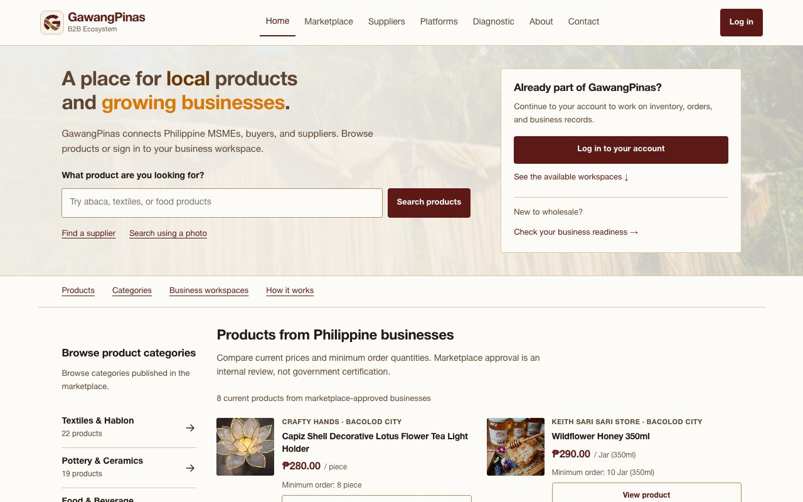
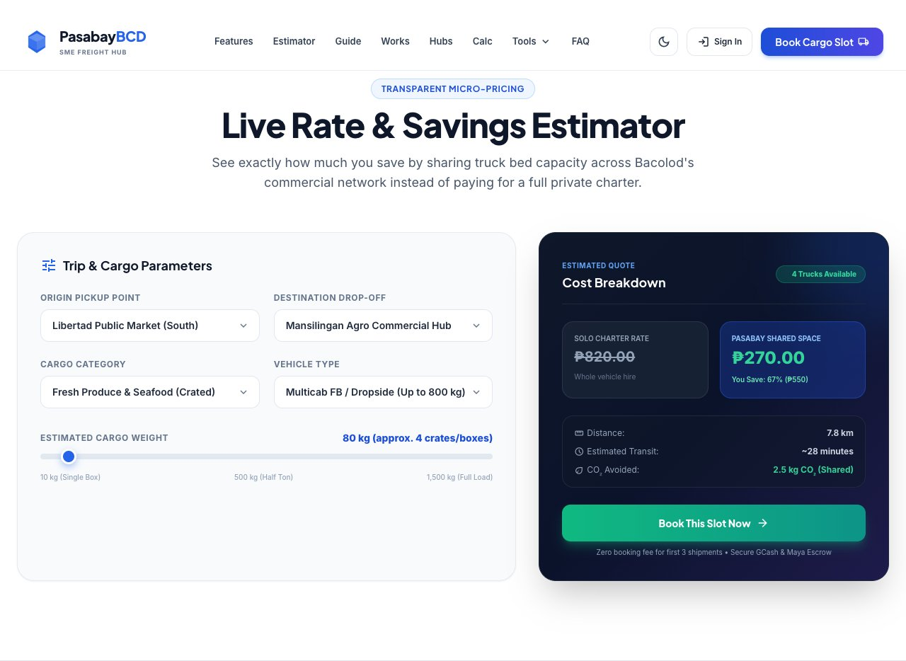
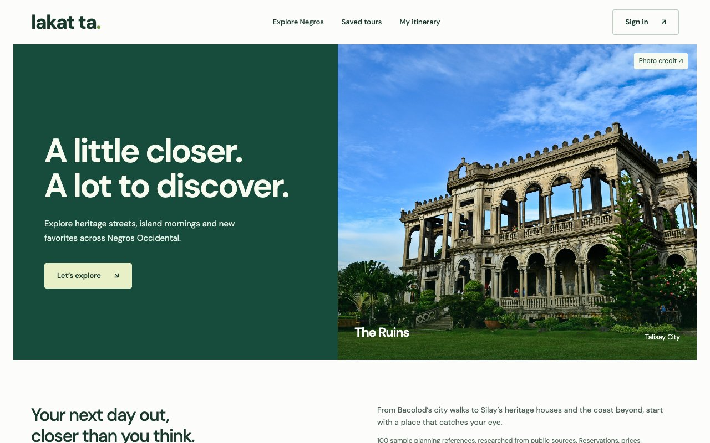

GawangPinas
MSME marketplace. Capstone project.A Philippine MSME marketplace connecting products, suppliers, and business workspaces for inventory, orders, and records.
- Project focus
- Marketplace & business tools
I’m an IT student, developer, and researcher turning complex ideas into clear, practical experiences across web, data, and networks.
Open to projects, collaboration, and IT opportunities.
I’m JC Niñonuevo, a BS Information Technology student at the University of St. La Salle. My work brings together web development, UI/UX, database management, networking, and research to turn complex ideas into systems people can actually use.
Business tools, local logistics, inventory monitoring, and travel planning. Explore the public interfaces below.
No projects match these filters.

A Philippine MSME marketplace connecting products, suppliers, and business workspaces for inventory, orders, and records.

A cargo-consolidation interface for Bacolod with rate estimation, shipment-tracking screens, and shipper tools.

An inventory portal for sugar stock, SRO quantities, issuance, deliveries, and stock reports, accessed through an account sign-in.

Explore Negros Occidental through a sample travel catalog, saved places, and itinerary planning.
Source-based diagrams of static delivery, field reporting, and browser-local storage.
Financial readiness, inventory visibility, proposed methods, and downloadable briefs.
Network lab configurations, topology instructions, and an expected-verification worksheet.
See the complete collection of web apps, demos, and experiments.
I move between interface design, engineering, and research to understand the whole problem—not just one part of it.
Responsive frontends and practical application logic.
Clear data models, workflows, and backend structures.
Evidence, synthesis, and technical communication.
Routing, switching, and hands-on simulation.
Technologies used across academic development, network labs, and publication work.
Networking training: CCNA 1 & CCNA 2, Cisco Networking Academy through the University of St. La Salle, 2025–2026.
Academic foundations, technical training, and the work they support.
Applied areas include web and mobile development, database management, network configuration, and technical problem solving.
Download full CV ↓Training entries are sourced from my resume and the supplied AWS course completion certificate.
My academic work explores how technology can support micro, small, and medium enterprises—connecting financial readiness, digital access, and consumer behavior to more useful systems.
Explore researchLearning by building, documenting, and refining.
The La Salle Yearbook
Academic IT Projects
University of St. La Salle · Bacolod City
Undergraduate studies across systems development, networking, and database management. Expected completion: 2027.
Open to projects, collaboration, and IT opportunities, with a particular interest in networking and infrastructure.
Connect on LinkedIn ↗